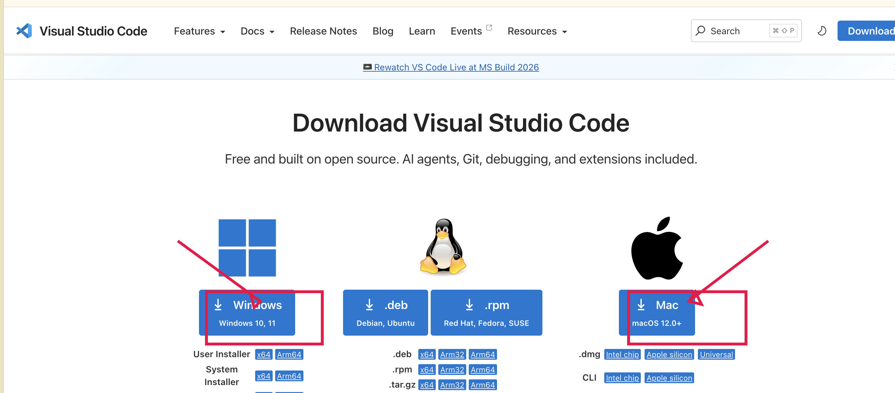

Git、Python、VS Code 与本地环境安装指南¶
这是《使用 VS Code 维护北门观测站》的前置文章。
如果你已经安装 VS Code，并能在它的终端中看到 Git 和 Python 的版本号，可以跳过本文。
先做一个选择¶
你需要安装 VS Code、Git 和 Python；只有 Miniconda 是可选的：
- Windows： 安装 Git for Windows 和 Python 官方安装包；不要安装 Homebrew。
- macOS： 推荐使用 Homebrew 安装 Git 和 Python；也可以改用 Python 官方安装包。
- Miniconda： 是 Python 的另一种管理方式，只有在你已经使用 Conda，或站务负责人明确要求时才安装。
对于第一次维护网站的新成员，推荐按“操作系统 + 官方安装方式”完成即可。Homebrew 和 Miniconda 不是 GitHub 必需品，也不是 VS Code 的插件。
1. 安装 Visual Studio Code¶
VS Code 是我们打开网站文件、编辑 Markdown 和运行终端命令的地方。请只从官方页面下载：https://code.visualstudio.com/download。

Windows¶
- 在下载页点击 Windows。
- 下载完成后双击安装程序。
- 安装选项保持默认即可；如果看到 Add to PATH 或“添加到 PATH”，请勾选它。
- 点击 Install，完成后点击 Finish。
macOS¶
- 在下载页点击 Mac。
- 如果是 M 系列芯片（M1/M2/M3/M4），选择 Apple silicon；如果是 Intel 芯片，选择 Intel chip。
- 打开下载的
.dmg文件，把 Visual Studio Code 拖到 Applications（应用程序） 文件夹。 - 从“应用程序”打开 VS Code；第一次弹出安全提示时点击 打开。
安装完成后，打开 VS Code，看到欢迎页就说明安装成功。暂时不需要安装任何扩展；教程后面会直接使用左侧 Explorer 和下方的 Terminal。
2. 安装 Git¶
Git 负责记录文件修改、创建分支，并把本地修改同步到 GitHub。
Windows：Git for Windows¶
- 在浏览器打开 https://git-scm.com/download/win。
- 下载并运行安装程序。
- 安装选项第一次可以全部保持默认，连续点击 Next，最后点击 Install。
- 安装完成后重启 VS Code。
在 VS Code 中选择 终端 → 新建终端，输入：
git --version
看到类似 git version 2.x.x 的文字，就安装成功了。
截图 A1｜Git for Windows 下载页。 红框标出下载入口；不要把下载网站上的广告按钮当成 Git 安装按钮。
截图 A2｜Windows Git 版本检查。 VS Code 终端中显示
git --version和版本号。
macOS：使用 Homebrew（推荐）¶
Homebrew 是 macOS 的命令行软件包管理工具。它不是 Git，但可以帮你安装和更新 Git、Python 等工具。
- 在浏览器打开 https://brew.sh/zh-cn/。
- 复制网页上的安装命令。
- 打开 VS Code 的终端，粘贴命令并按回车。
- 安装过程中可能要求输入 macOS 登录密码。输入时终端不会显示字符，这是正常的；输入完成后按回车。
- 安装完成后关闭并重新打开 VS Code。
检查 Homebrew：
brew --version
再安装 Git：
brew install git
最后检查：
git --version
截图 A3｜macOS Homebrew 官网。 红框标出安装命令；截图中不要包含个人用户名或终端历史中的私人信息。
截图 A4｜macOS 安装 Git。 终端显示
brew install git完成后，再显示git --version的版本号。
不想使用 Homebrew？¶
也可以打开 https://git-scm.com/download/mac 安装官方 Git 包。安装完成后，在 VS Code 终端运行 git --version 验证即可；两种方式不要重复安装。
3. 安装 Python 3¶
MkDocs 是用 Python 运行的。我们需要的是 Python 3，不是 Python 2。
Windows：Python 官方安装包¶
- 打开 https://www.python.org/downloads/windows/。
- 下载最新的 Python 3 安装程序。
- 安装开始页面中，务必勾选 Add python.exe to PATH。
- 点击 Install Now。
- 安装完成后重启 VS Code。
在终端运行：
py --version
看到类似 Python 3.12.x 即可。Windows 教程中优先使用 py 命令，避免系统中同时存在多个 Python 时找错版本。
截图 A5｜Windows Python 安装页。 红框标出 Add python.exe to PATH；这是新人最容易漏掉的选项。
截图 A6｜Windows Python 版本检查。 终端中显示
py --version和Python 3.x.x。
macOS：使用 Homebrew¶
如果上一节已经安装 Homebrew，可以运行：
brew install python
然后检查：
python3 --version
python3 -m pip --version
两条命令都显示版本号即可。
macOS：使用 Python 官方安装包¶
不使用 Homebrew 时，打开 https://www.python.org/downloads/macos/，下载 Python 3 安装包并按默认选项安装。重启 VS Code 后检查：
python3 --version
看到 Python 3.x.x 即可。
截图 A7｜macOS Python 检查。 终端中依次显示
python3 --version和python3 -m pip --version。
4. Miniconda 是什么？什么时候安装？¶
Miniconda 是一个较轻量的 Conda 安装程序，可以为不同项目分别管理 Python 环境。它对科研、数据分析和需要很多 Python 包的项目很有用，但维护协会 MkDocs 网站并不强制需要它。
如果负责人要求你使用 Miniconda：
- 从官方页面下载对应系统版本：https://docs.conda.io/projects/miniconda/en/latest/。
- Windows 按安装程序默认选项安装；macOS 按系统芯片选择 Apple Silicon 或 Intel 版本。
- 安装完成后重启 VS Code。
- 终端运行：
conda --version
看到版本号后，再按负责人提供的项目环境命令操作。
不要同时用 Homebrew Python 和 Miniconda Python 创建同一个 MkDocs 环境。 如果终端提示
python、python3和conda指向不同位置，先暂停并求助。截图 A8｜Miniconda 版本检查。 终端显示
conda --version；图注强调“Miniconda 是可选工具，不是 GitHub 的必需安装项”。
5. Git 的首次身份设置¶
Commit 中会记录作者名称和邮箱。它不负责登录 GitHub，只是给修改留下署名。
把下面两条命令中的内容替换成你希望显示的姓名和邮箱：
git config --global user.name "你的姓名或 GitHub 用户名"
git config --global user.email "你的 GitHub 邮箱"
检查是否保存成功：
git config --global --list
不要把访问令牌、密码或 OAuth client secret 写入
user.email，也不要把git config --global --list的完整输出公开到群里；其中可能包含个人邮箱。
6. 安装完成验收¶
在 VS Code 中打开一个新终端，根据系统运行：
Windows¶
git --version
py --version
macOS¶
git --version
python3 --version
看到 Git 版本号和 Python 3 版本号后，再回到主教程的第 1 节开始。
如果仍然失败，请一次性提供：操作系统、你输入的完整命令、终端完整报错截图。不要只发“运行不了”。
安装问题速查¶
| 问题 | 可能原因 | 处理 |
|---|---|---|
git 找不到 |
Git 未安装，或 VS Code 尚未重启 | 重启 VS Code；仍失败则重新检查 Git 安装 |
Windows 找不到 py |
Python 安装时没加入 PATH | 重新运行安装程序并勾选 Add python.exe to PATH |
macOS 找不到 brew |
Homebrew 安装未完成或终端未重启 | 重启 VS Code，检查安装命令的最后几行 |
python 与 python3 版本不一致 |
电脑上有多套 Python | 不要自行删除；截图后联系负责人 |
pip 权限错误 |
使用了系统 Python 或权限不足 | 优先使用 python3 -m pip / py -m pip，不要加 sudo |